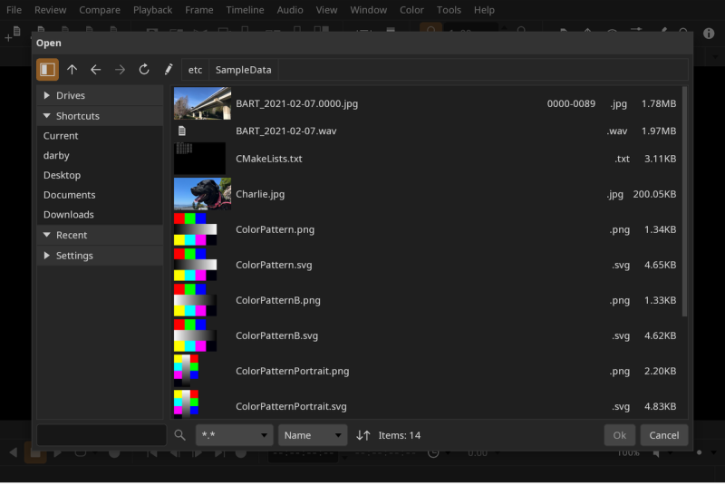
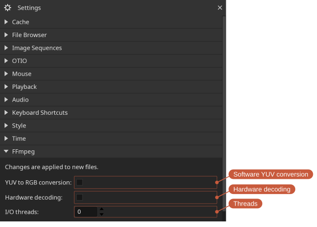
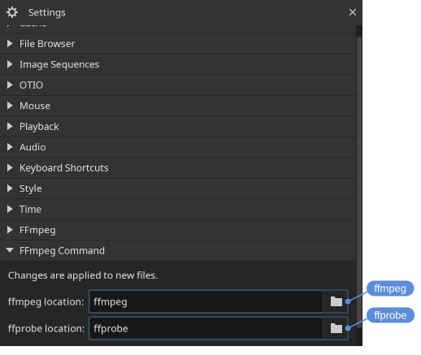
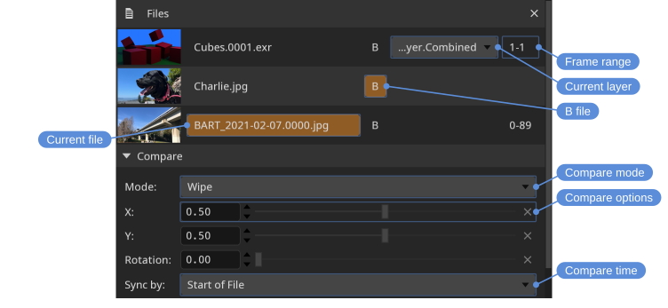
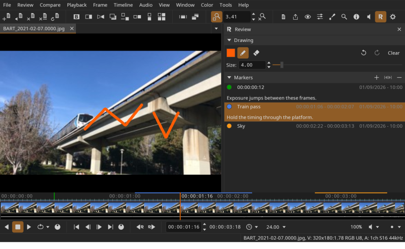

Files
DJV ships with support for the following formats:
- Image sequences: Cineon, DPX, JPEG, OpenEXR, PNG, PPM, SGI, TGA, BMP, TIFF
- Movie codecs: MJPEG, MPEG-2
- Audio codecs: FLAC, MP3, WAV
- Timelines: OTIO, OTIOZ
Different formats may be available depending on how DJV was built, or by using an external FFmpeg command.
Opening files
You can open files and folders in three ways:
- From the File menu or File tool bar
- By dragging and dropping onto the main window
- From the command line
Opening a folder opens every supported file in that folder (non-recursively).
Shortcuts:
- Open: Ctrl+O
- Open with audio: Ctrl+Shift+O
- Reload: Ctrl+R
- Close: Ctrl+E
- Close all: Ctrl+Shift+E
Image sequences can be opened from the command line by either specifying the first frame or using the "#" wildcard. For example:
djv render.#.exrThe native file browser is enabled by default on Windows and macOS. To use DJV's built-in file browser instead, change the option in the Settings tool. Linux packages are built without the native file browser, since it would mean linking to the desktop's own; there the built-in browser is always used and the option is disabled.
The built-in file browser
The built-in file browser has a panel on the left for navigation and a file list on the right:
- Drives — Mounted drives and volumes.
- Shortcuts — Common locations such as the home, Desktop, Documents, and Downloads folders.
- Recent — Recently visited directories.
- Settings — The size of the thumbnails, whether image sequences are gathered into one item, and whether hidden files are shown.
Above the file list are buttons to go up a directory, navigate back and forward, reload, and edit the current path, along with a row of path buttons for quickly jumping to any parent directory. Below the list, a search box filters by name, an extension menu filters by file type, and the sort menu and direction button order the results.
Image sequences are shown as a single item with their frame range, so a multi-thousand-frame render appears as one entry rather than thousands.

Floating the file browser
The file browser normally opens over the main window, which covers whatever is playing while you choose. Turn on Floating window in the Settings tool to open it in a window of its own instead, so the media stays visible. The setting takes effect the next time the browser is opened.
A floating browser closes when a file is chosen, the same as the dialog. Check Pin in the browser to keep it open for a run of files. Whether the browser is pinned is remembered between sessions.
Escape closes a floating browser. It is overloaded: the first press puts down the file list if it has the keyboard focus, and the next one closes the browser.
Switching files
To switch between open files, use the File/Current menu, the Tab Bar, or the Files tool.
Locations: File menu, Tab Bar, Files tool
Shortcuts:
- Next file: Ctrl+Page Down
- Previous file: Ctrl+Page Up
Playlists
File/Save Playlist saves the list of open files as an OTIO file: the order, each file's in/out points, position, speed, and layer, and the A/B comparison. File/Open Playlist opens one back into the file list.
Locations: File menu
A playlist is a plain OTIO timeline — a single video track with one clip per file — so other applications can open it, and DJV's own state rides in metadata they ignore. Opening a .otio file with File/Open plays it as a timeline in one tab; Open Playlist is what expands it into the file list. Any timeline can be opened as a playlist: multiple video tracks are flattened, and whatever the file list cannot carry — transitions, effects, markers, audio tracks — is dropped and reported in the log. A timeline of only audio opens its first audio track. A clip with a range but no saved position starts at its in point. The file being opened is never modified.
A .otioz bundle opens as a timeline only: its media lives inside the bundle, so its clips cannot become entries in the file list.
Media references are saved relative to the playlist's directory when the media is under it, so a playlist saved above its media can move with it. Everything else is saved with an absolute path.
A playlist holds the file list and the comparison. Color, view, and window state stay in the settings.
FFmpeg plugin
The FFmpeg plugin provides support for movie and audio files. Only a limited set of codecs is enabled in the open source packages; anything the packaged FFmpeg cannot decode is read with the FFmpeg command instead, or you can build from source.

Changes take effect on newly opened files; reload (Ctrl+R) to apply them to the current file.
- Software YUV conversion - Convert YUV to RGB on the CPU instead of on the GPU. Off by default: the decoded YUV frame is uploaded directly and converted in the display shader, which is faster and avoids an extra frame copy. Enable this to perform the conversion in software before display.
- Hardware decoding - Decode video on the GPU (VideoToolbox on macOS, Direct3D 11 on Windows) when the file is compatible. Off by default. Files that are not compatible will automatically fall back to software decoding.
- Threads - The number of threads used for decoding. The default,
0, lets FFmpeg choose automatically based on the system.
FFmpeg command
To support additional formats and codecs, DJV can read a file with an external FFmpeg command. FFmpeg runs as a sub-process and streams decoded video and audio to DJV for display.
This is not something to turn on. It is part of the FFmpeg plugin, and the plugin decides per file: when the packaged FFmpeg has no decoder for what the file holds, or cannot open the file at all, the command is used; otherwise the file is read by the FFmpeg libraries. So bringing your own FFmpeg is a matter of installing one, and files that the packaged build reads perfectly well go on being read by it.
Which of the two read a file is written to the log, since it is otherwise not visible from the outside.
The paths to the ffmpeg and ffprobe commands are set in the Settings tool. Leave them as the command names to use whatever is on the PATH.

Changes take effect on newly opened files; reload (Ctrl+R) to apply them to the current file.
- ffmpeg, ffprobe — Set the command location. Click the field to show the full path, or the folder icon to browse for it.
Memory cache
DJV caches frames in memory for smooth playback and scrubbing. The cache is configured in the Settings tool, with separate values for video, audio, and read-behind. Read-behind is the number of seconds cached before the current frame, which keeps scrubbing responsive when moving backward.
Only the current file is cached. Switching files clears the cache and reloads it for the new file.
Layers
For files with multiple layers (such as multi-part OpenEXR), the active layer can be changed from the File/Layers menu or from the Files tool.
Locations: File menu, Files tool
Shortcuts:
- Next layer: Ctrl+Equals
- Previous layer: Ctrl+Minus
Files tool
The Files tool is the central place for managing open files: it sets the current file, picks active layers, and configures comparison.
Locations: Tools menu, Tools toolbar
Shortcut: F1

- Current file (the A file)
- B files (multiple B files can be set in tile mode)
- The frame range of an image sequence, which can be edited to open the sequence over a different range (see Partial image sequences)
Drag a file's thumbnail to reorder the list. The order is what a playlist saves, and what the next and previous file actions step through. When the drag reaches the top or bottom of the panel the list scrolls, so a spot that is off the screen can be reached.
Partial image sequences
A sequence does not have to be complete. A render still in progress has only the frames written so far, and a render distributed across several machines can gain them out of order. DJV opens such a sequence and lets you choose what happens where the frames are not there.
The choice is the Missing frames setting in the Image Sequences section of the Settings tool:
- Error — the frame does not read, and the error is reported in the status bar.
- Hold — the nearest frame before it is repeated.
- Black — a blank frame.
- Skip — the missing frames are left out, so only the frames that are there play and the sequence is as long as they are.
- Gaps — the missing frames are left as holes, so every frame keeps the time it had and the gaps are visible on the timeline.
The first three are decided as each frame is read, so changing between them applies to what is already open, and a timeline that states its own policy is followed instead. Skip and Gaps decide what the timeline is built from, so they apply only to an image sequence opened on its own, and changing to or from one of them opens the file again.
Which frames a sequence has is found by reading them, not by scanning at startup, so a complete sequence costs nothing and a render in progress picks up frames as they land. Skip and Gaps are the exception: they have to look for the frames once in order to build the timeline, so they are a snapshot, and frames written afterwards appear when the file is opened again.
Frame numbers
Under Skip the sequence is shorter than the range it covers, so counting from the start no longer gives the frame number. DJV shows the number the frame actually has — in the current time, on the timeline, and when you type a frame number to go to it. A sequence holding frames 1, 11, 21, 31 and 88 to 90 plays as seven frames, and the fourth of them reads as frame 31.
Typing a frame number the sequence does not have goes to the nearest frame before it, so the frame you land on is the frame you are shown.
This holds while the timeline plays one media through, whether in one piece or in the runs a sparse sequence is cut into. A timeline that cuts between different media, or plays the same media twice, has no single numbering to show: the number would restart at every cut, and a clip whose media runs at a different rate than the timeline would repeat it from one frame to the next. The current time and the timeline ruler count the timeline itself there.
Marking the frames that are not there
Under Hold and Black the picture on screen is not the frame that was asked for, and nothing about it says so — a render part way through can look finished. Turn on Indicate missing in the same settings section to draw a cross over any such picture; the width and colour are alongside it. The time in the heads up display also says which frame is being held, for example held from 1.
This only changes what is drawn, so unlike the setting above it applies to whatever is already open.
Stating the range
The frames found on disk are not always the range you want. A render that will end up as frames 1 to 100 has fewer than that today, and watching it over the range it will become is often more useful than watching it over the range it has reached.
Set the range for an open file with the frame range fields in the Files tool, which reopens it over that range. From the command line use -frameRange (or -fr), which applies to the first file opened:
djv render.#.exr -frameRange 1-100Image sequences with audio
Audio can be paired with an image sequence either automatically or manually.
To pair audio automatically, open the Image Sequences section in the Settings tool. You can either list the file extensions DJV should look for (for example, .wav .mp3), or provide a specific file name to match.
To pair audio manually, use the menu File/Open With Audio.
Timelines
OTIO timelines are opened like any other file. An .otio file references other pieces of media, and relative paths are relative to the .otio file. An .otioz bundle carries the media inside the one file: it is self-contained, so it can be moved or sent somewhere else, and DJV reads the media from the bundle itself rather than from disk.
Media references
A clip in an OTIO timeline can carry more than one version of its media as media references — for example a proxy and a full resolution render of the same shot, selected by name.
DJV lists the names it finds in the File/Media References menu. Choosing one switches every clip in the timeline to the reference with that name; clips that do not have one keep the reference they were authored with. Switching changes only what is read — the layout and zoom stay where they are — and the Information tool and HUD describe the reference being read.
Locations: File menu
Shortcuts:
- Next media reference: Shift+M
Reviews

A review is a saved session. Instead of re-opening each file and rebuilding a comparison by hand, you can save the whole setup to a .djvr file and reopen it later in one step. A review stores:
- The open files, including any separate audio, the active layer, and each file's speed, current frame, and in/out range.
- The active tab (the A file) and the comparison setup: mode, B files, wipe, overlay, and the relative/absolute time mode.
- The viewport state: framing, pan, and zoom.
- Color and display state: OCIO, LUT, display, background, foreground, aspect ratio, and HUD.
- The interface: the open tool panels.
Opening a review replaces the current session. File paths are stored relative to the .djvr when possible, so a review stays valid when moved together with its media; any files that cannot be found are reported in the Messages tool.
A review written by a newer DJV than the one you are running is refused, with the reason given in the Messages tool, rather than opened in part. Anything else in a review that this version does not understand is left alone: it is kept as it stands when you save, so passing a session between different versions of DJV does not quietly strip it. The document itself is described in Review file format.
The window title shows the open review's path, with a trailing * while it has unsaved changes. Close Review closes the review and returns DJV to its empty startup state; if there are unsaved changes it prompts to save first, as does quitting the application.
While a saved review has unsaved changes, DJV keeps a periodic autosave backup. If the application does not exit cleanly, the next launch offers to recover those changes.
Building a review: make "A" the primary source
A review can hold any number of files, but the "A" file is always the master. Set it to the source the review is about — the shot being reviewed — and use the "B" files for what you compare it against.
This is not a stylistic preference: "A" drives playback and timing. The player is built from "A", so its duration, frame rate and audio govern the session; the timeline shows "A"; comparison times are resolved relative to it; and Fit to A scales the other sources to match it. A review whose "A" is a reference still plays, but every timing decision then follows the wrong source.
How many "B" files you may add depends on the comparison mode:
| Mode | "B" files | |---|---| | A, B, Wipe, Overlay, Difference, Horizontal, Vertical | one | | Tile | any number |
Selecting a second "B" in a single-buffer mode replaces the first, and switching from Tile to any other mode keeps only one "B". This is by design, and it is why reviews are saved with the mode: reopening a tiled review with four sources restores all of them, while the single-buffer modes restore one. In every mode "A" is restored exactly as it was saved.
The recommended way to build a review:
1. Open the primary source first, so it becomes "A". 2. Open the sources to compare against, and mark them as "B". 3. Choose the comparison mode — Tile if you need more than two sources. 4. Save the review.
Locations: File menu
Shortcuts:
Open review: Ctrl+Shift+O Save review: Ctrl+Shift+S
Reviews can also be opened from the command line:
djv session.djvr
Personal preferences — keyboard shortcuts, style, cache size, and the audio device — are deliberately not stored in a review, so opening one received from someone else does not reconfigure your installation.
Notes and drawings record who made them, taken from your account name on the machine, so a session that has been passed around stays readable.
OTIO spatial coordinates
OTIO files can give each clip a bounding box, called the spatial coordinates, that describes the area the image occupies on a canvas shared by the whole timeline. DJV uses these boxes to size and position the images.
The most common use is playing back clips that were rendered at different resolutions. Give the clips the same box and they are all displayed at the same size, so the view no longer jumps between them when playback moves from one clip to the next. This also keeps the zoom and pan steady across a cut, which is useful for checking continuity between shots.
The coordinates are unit-less, so boxes of 0, 0, 1920, 1080 and 0, 0, 16, 9 describe the same area. DJV works out the size in pixels from the first clip that has coordinates, together with the resolution the timeline is working at. The Y axis points up, unlike image coordinates, so a clip with a larger Y value is displayed higher.
Clips can also be given different boxes to place them side by side, or to position a smaller image within a larger frame.
The OTIO section in the Settings tool controls how the coordinates are used:
- None — Ignore the spatial coordinates. Clips are sized from their own resolution.
- Coordinates — Use the spatial coordinates where clips provide them. This is the default.
- Normalize — Use the spatial coordinates, and display clips that do not have them at the size of the first clip. Use this to play clips of differing resolutions at the same size when the timeline was not authored with spatial coordinates.
The authored coordinates are shown in the Information tool, along with the canvas DJV derived from them.